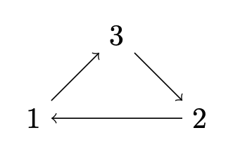
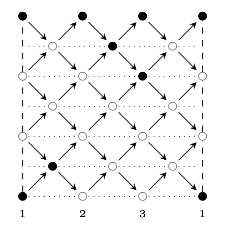
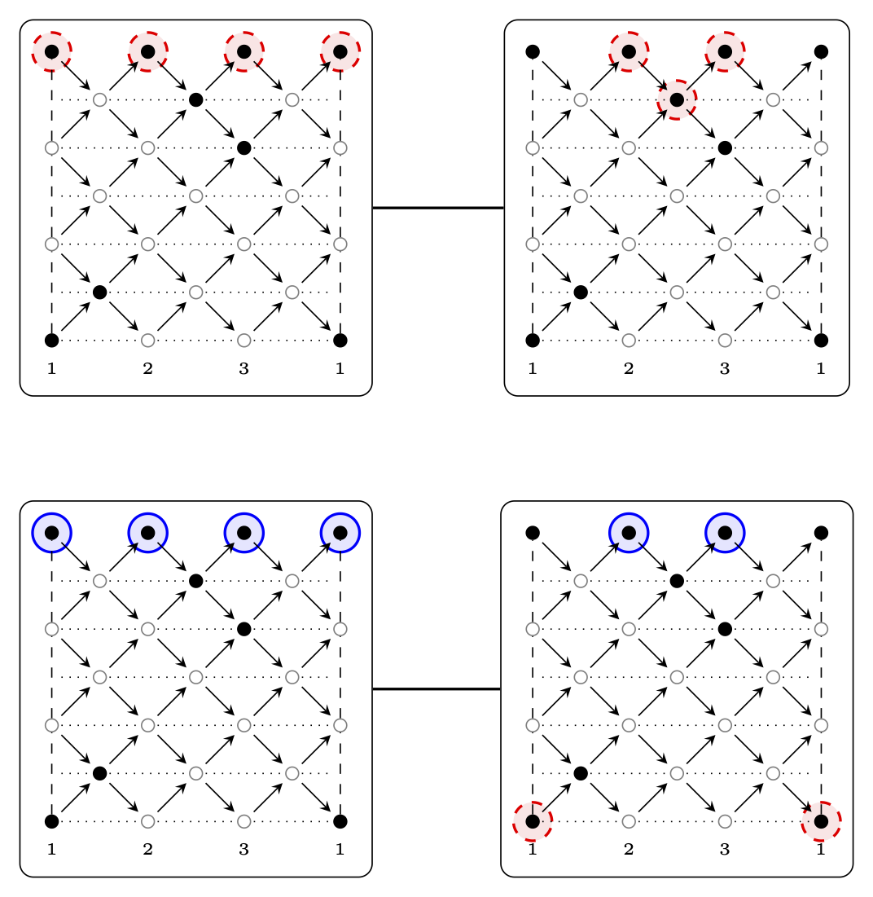
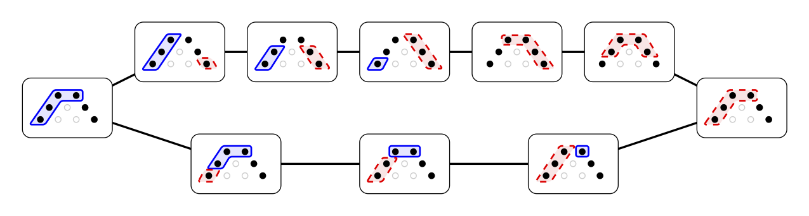
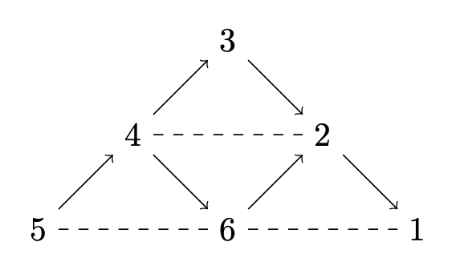
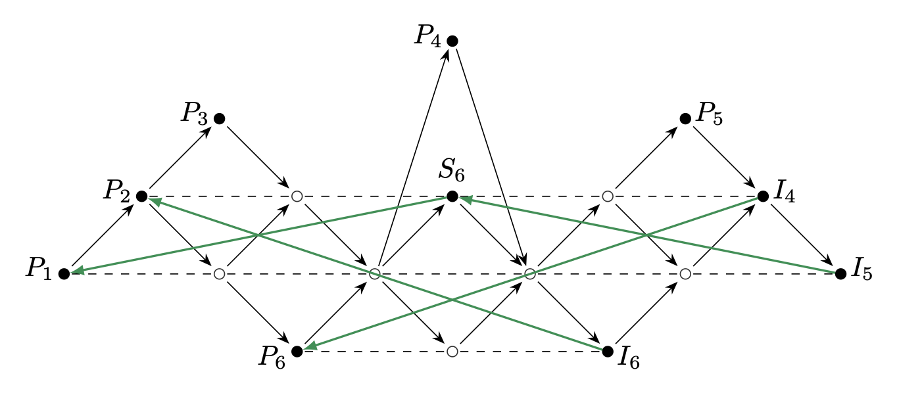

Home | \(\tau_d\)-rigid pairs | Mutation
Last updated:
This is a supplement to the paper \(\tau_d\)-tilting theory for Nakayama algebras [RV24].
We are working with linear Nakayama algebras with homogeneous relations, admitting a \(d\)-cluster tilting subcategory \(\mathcal{C}\). Specifically, for an algebraically closed field \(\mathbf{k}\), we are working with the algebras \(\Lambda(n,l)=\mathbf{k}\mathbb{A}_n/R^l\), where \(R\) is the arrow ideal of the quiver \(\mathbb{A}_n\) given by $$ n\longrightarrow n-1 \longrightarrow \cdots \longrightarrow 2 \longrightarrow 1 .$$ The indecomposable modules of \(\operatorname{mod}\Lambda\) are uniquely given through their support on \(\mathbb{A}_n\), which can be described as subintervals of \([1,n]\). Hence, they will be denoted by \(M(a,b)\), where \([a,b]\) is their support-interval.
For some more preliminary information on the \(d\)-cluster tilting subcategory of \(\Lambda(n,l)\) and the possibility of constructing your own \(\tau_d\)-rigid pair, visit here. Note that a summand-maximal \(\tau_d\)-rigid pair \((M,P)\) is a \(\tau_d\)-rigid pair of \(\mathcal{C}\) such that for any other \(\tau_d\)-rigid pair \((N,Q)\) we have \(|N|+|Q|\leq |M|+|P|\). We have shown that for \(\Lambda(n,l)\) a \(\tau_d\)-rigid pair \((M,P)\) is summand-maximal if and only if \(|M|+|P|=n\).
The paper [RV24] only deals with the concept of mutation on a surface level, however as it bears witness of the over-arching structure we provide some of our findings here.
Let \((M,P)\) and \((M',P')\in \mathcal{C}\times \operatorname{proj}\Lambda\) be summand-maximal \(\tau_d\)-rigid pairs of \(\Lambda(n,l)\). If there exists a pair \((N,Q)\in\mathcal{C}\times\operatorname{proj}\Lambda\) that is a summand of both \((M,P)\) and \((M',P')\), and \(|N|+|Q|=n-1\), then \((M,P)\) and \((M',P')\) are mutations of each other.
The first observation we want to share is that the \(\tau_d\)-mutation graph of summand-maximal \(\tau_d\)-rigid pairs (sm-\(\tau_d\)-mutation graph for short) over \(\Lambda(n,l)\) is connected [RV, Proposition 6.10]. This is not true in general, see the following example:
The sm-\(\tau_d\)-mutation graphs aren't necessarily connected. Consider for example the cyclic Nakayama algebra \(\Delta(3,7)=\mathbf{k}\tilde{\mathbb{A}}_3/R^7\), where \(\tilde{\mathbb{A}}_3\) is given by
In \(\operatorname{mod}\Delta(3,7)\) we choose the \(2\)-cluster tilting subcategory \(\mathcal{C}\) given by the filled nodes in the AR-quiver below.
The sm-\(\tau_2\)-mutation graph of \(\mathcal{C}\) consist of two components:
We further showed that when \(\Lambda(n,l)\) is \(d\)-representation finite, the sm-\(\tau_d\)-mutation graph is an extended Dynkin graph of type \(\tilde{\mathbb{A}}\) with \(2n+l-1\) vertices [RV, Prop. 6.12]. This is not something that holds for \(d\)-representation finite algebras in general, a counterexample is given by the Auslander algebra of type \(\mathbb{A}_3\) (see further below).
The sm-\(\tau_2\)-mutation graph of the \(2\)-representation finite algebra \(\Lambda(4,3)\) is
Even for \(\Lambda(n,l)\) the complexity of the sm-\(\tau_d\)-mutation graph increases quite rapidly when you move away from the \(d\)-representation finite case. Below we have included the sm-\(\tau_2\)-mutation graph of \(\Lambda(9,3)\) to exemplify this further below.
Below you can generate an algebra \(\Lambda(n,l)\) which admit a \(d\)-cluster tilting subcategory, by choosing \(d\), \(p\) and \(l\) appropriately. The module category will be represented as it's AR-quiver where each vertex is an indecomposable. The darker vertices are indecomposables in the \(d\)-cluster tilting subcategory.
With a given \(\tau_d\)-rigid pair with \(n\) summands, you can choose a summand to mutate in. The summands which can be mutated will be displayed with a green or orange border, as well as an arrow. You can either choose to start with
There are in total \(160\) different summand-maximal \(\tau_2\)-rigid pairs in the \(2\)-cluster tilting subcategory of \(\operatorname{mod}\Lambda(9,3)\). A pair here have at most \(6\) possible mutations and at least \(3\).
Click here to download pdf.
We are now working over the algebra given by the following quiver with relations:
This is a \(2\)-representation finite algebra. The \(2\)-cluster tilting subcategory is given by the indecomposables marked with a filled circle in the following AR-quiver. We have also drawn the non-trivial actions of \(\tau_2\) on the indecomposables with green arrows.

There are in total \(40\) summand-maximal \(\tau_2\)-rigid pairs. The nodes in the sm-\(\tau_2\)-mutation graph have either 3 or 4 edges.
Click here to download pdf.